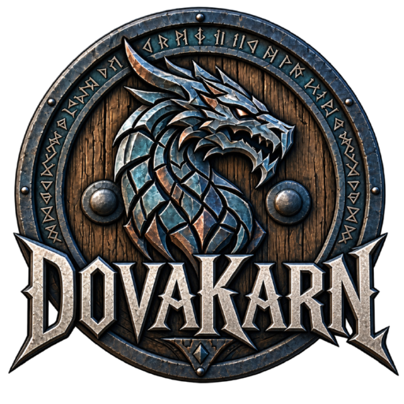

Sky above. Voice within.
Dovakarn
Latest updates
Loading the latest updates...
Checking server...
Preparing launcher...

Sky above. Voice within.
Loading the latest updates...
Preparing launcher...
Loading...
Your account number is how the staff find you. It shows above your head in the game.
Keys for Dovakarn and the mods it uses. Every other mod setting is set by the server, and the launcher puts it back if it changes. Your keys are applied the next time you press Play.
You can log out once the current download finishes.
The launcher also looks for the mods' downloads in these folders. It only reads them.
Your game files and the mod collection are checked every time the launcher opens and again before every game. Anything that changed is fixed for you or shown on the main screen.
Dovakarn plays from its own copy of Skyrim, so your own Skyrim and its mods stay exactly as they are.
Press Download them all and Nexus opens inside the launcher. Log in once. A free account works. Then press Slow download for each mod, and the launcher takes each file by itself.